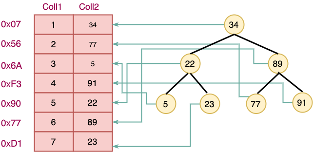

索引¶
什么是索引¶
-
索引是一种排好序的快速查找的数据结构,它帮助数据库高效的查询数据
-
在数据之外,数据库系统还维护着满足特定查找算法的数据结构,这些数据结构以某种方式指向数据,这样就可以在这些数据结构上实现高效的查找算法.这种数据结构,就是索引

-
一般来说索引本身也很大,不可能全部存储在内存中,因此往往以索引文件的形式存放在磁盘中
-
我们平常所说的索引,如果没有特别说明都是指BTree索引
索引优缺点¶
-
优点:
-
提高数据查询的效率,降低数据库的IO成本
-
通过索引对数据进行排序,降低数据排序的成本,降低CPU的消耗
-
缺点:
-
索引本身也是一张表,该表保存了主键与索引字段,并指向实体表的记录,所以索引列也要占用空间
-
虽然索引大大提高了查询的速度,同时反向影响增删改操作的效率,因为表中数据变化之后,会导致索引内
容不准,所以也需要更新索引表信息,增加了数据库的工作量
-
随着业务的不断变化,之前建立的索引可能不能满足查询需求,需要消耗我们的时间去更新索引
索引的使用¶
查看索引¶
查看数据库中已有索引
1 | |
创建索引¶
- 如果指定字段是字符串,需要指定长度,长度最好与定义字段时一致
- 字段类型如果不是字符串,可以不填写长度
1 | |
删除索引¶
1 | |
验证索引¶
索引在数据量小的表中是体现不出来它的作用的,只有当表中数据非常庞大的时候,才能体现出索引的重要性!
为此,我们首先插入5000000条记录到数据库表中.
1 2 3 4 5 6 7 8 9 10 11 12 13 14 15 16 17 18 19 20 21 22 23 24 25 26 | |
除了使用上面这种方式导入外,mysql还提供了换门用于数据快速导入的功能
1 2 3 4 5 6 7 8 9 10 11 12 13 14 15 16 17 18 19 20 21 22 | |
查询验证¶
MySQL 的 Query Profiler 是一个使用非常方便的 Query 诊断分析工具，通过该工具可以获取一条Query 在整个执行过程中多种资源的消耗情况，如 CPU，IO，SWAP 等同时还能得到该 Query 执行过程中 MySQL 所调用的各个函数在源文件中的位置。
通过执行 “set profiling”命令，可以开启关闭 Query Profiler 功能。
- 开启运行时间监测:
1 | |
- 查询名字为n4000000的用户信息
1 | |
- 查看执行时间
通过执行
show profile命令获取当前系统中保存的多个Query的profile的概要信息
1 | |
- 为name列创建索引
1 | |
- 再次执行前面的语句
1 | |
- 再次查看执行时间
1 | |
小结
- 索引是一种已经排好序的数据结构
- 它能帮助我们提高数据库查询的效率
- 创建索引: create index 索引名 on 表名(字段(长度))
- 查看索引: show index from 表名